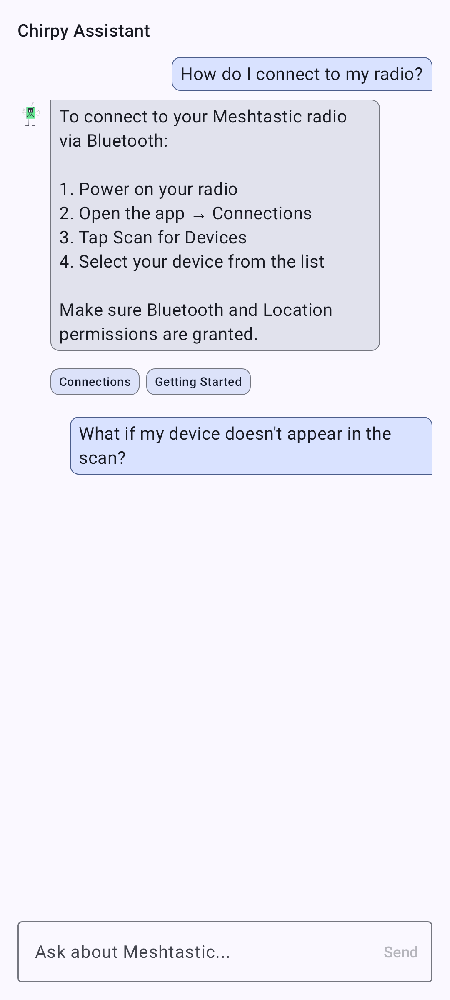

This same user documentation ships inside the app, so you can read it offline without leaving Meshtastic. Open it from Settings → Help & Documentation.
The docs browser lists every user-guide page. Tap a page to read it; images and cross-links work just like they do here.
Tap the search icon and type to filter pages by title and keywords — results update as you type.

A page open in the browser:

Chirpy answers plain-language questions about Meshtastic using this bundled documentation as its source. Tap the Chirpy button in the docs browser, type a question, and it replies with an answer and links to the relevant pages.

🔒 Privacy: On supported Google-flavor devices, Chirpy runs on-device using Gemini Nano — your questions never leave your phone. A small model downloads on first use.
ℹ️ Note: Chirpy is Google-flavor Android only. On F-Droid, Desktop and iOS builds the assistant button does not appear at all — the same is true on a Google-flavor device whose hardware cannot run the on-device model. Browsing and the docs browser’s own search work normally on every platform.